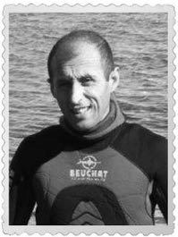

Yüzbaşı Orhan (Arap)
Orhan Aztekin. Orhan’ın da bu kitapta rol almasını çok istedim, ona da Arap rolü kaldı. (Artık idare et Orhan.) Orhan, etrafındakilere iyilik yapmak için çırpınan, o dönemde yaşasa kesin Arap kadar yiğitçe davranacak, kıymet bilen bir Türk Silahlı Kuvvetleri mensubudur. On dört yaşındayken benim de öğrencim oldu. Öğretmen-öğrenci, komutan-ast ilişkisinden sonra dost olduk. Arap, çocuklar için yaptıklarının daha fazlasını benim için yapmıştır. Hani gece karanlıkta cüzdan bulduğunda içi servetle dolu olsa da gözünü kırpmadan gidip sahibine veren kişi odur; dürüstlük, insanlık timsalidir.
